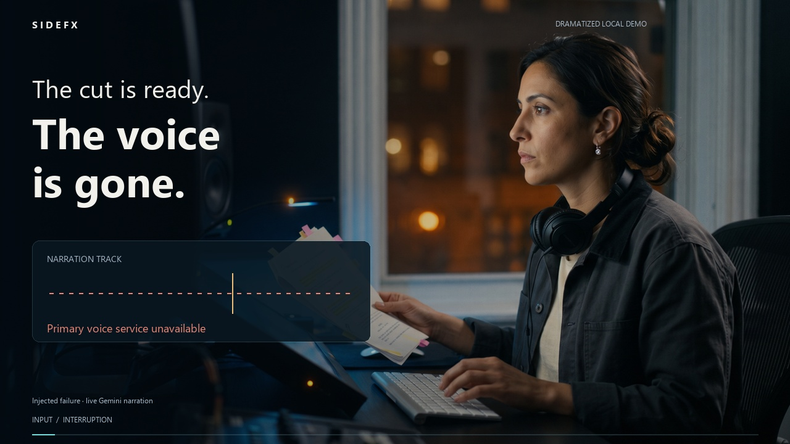

Capability content product / 01
The provider changed. The story stayed hers.
A producer has a script and a ready cut, but cannot continue the edit without usable narration.
9 contract projections7 evidence-bound claims5 source scenarios
Watch the 64-second film
The experience contract
INPUT
A producer has unfinished narration, a marked-up script and waiting work.
EVENT
The local demo retains the script, skips an unavailable primary and an incompatible candidate, obtains live speech, and verifies its file.
OUTCOME
The producer can hear her narration and return to the cut; one local job is complete.
One capability. Nine surfaces.
VIDEO
Human interruption
SHORTCompressed interruption
THUMBNAIL{kind=link}
Recognizable producer
ARTICLEHuman problem
INFOGRAPHIC{kind=link}
Persistent entities
TRAININGLearning objective
DEMOFailure injection scope
LANDING-PAGEAudience and problem
EVIDENCE-STORYClaim
Scope
Editorial composition led by Generate Governed Narration, with provider-switching context. The local demo is observed; a managed end-to-end recovery is not asserted. The fictional producer and studio dramatize the human experience.